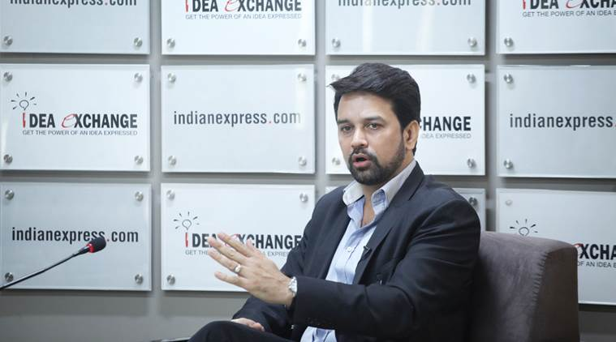
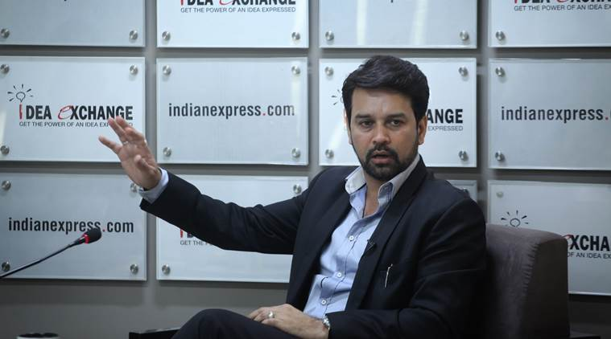

BJP MP and Secretary of the Board of Control for Cricket in India, Anurag Singh Thakur during Idea Exchange in New Delhi. (Source: Express photo by Oinam Anand)Why Anurag Thakur?
The debate on whether India should resume bilateral cricket ties with Pakistan has gathered steam again, and as the secretary of the Board of Control for Cricket in India and a BJP MP, Thakur is well-placed to express views of the cricket board as well as the government. He is also at the helm of the BCCI as it strives to implement a series of reforms to restore its image after the IPL match-fixing and betting scandal, and to resolve conflict of interest issues of office-bearers, and re-evaluates the need to reduce the ‘Big Three’s’ financial clout in the game
Sandeep Dwivedi:
What is the status of the forthcoming India-Pakistan series slated to be hosted in Sri Lanka?
My predecessors had signed an agreement with the Pakistan Cricket Board (PCB) for the next eight years, (including) the series to be played. In 2015, India was supposed to visit the UAE or any other neutral venue as decided by India and Pakistan. So Pakistan wanted to know when and where we should play. Mr Shashank Manohar (BCCI president) met the PCB chairman in Dubai and both of them decided to play in Sri Lanka. For permissions and political clearances, we have written to the Ministry of External Affairs to give us the sanction. It is their call, whenever they take it.
Watch Video (app users click here)
Sandeep Dwivedi: As a BJP MP, what’s your take? Should we play Pakistan?
In the last five years, our relations with our neighbours weren’t that good. But the NDA government has put in efforts to have better relations with Nepal, Bangladesh and other countries, including Pakistan. I think you have to take a call whether there should be any talks, if you want to engage with them. If you engage, then you can raise the issue of terrorism, cricket and trade. But if you don’t engage, you give that opportunity to someone else.
Shubhajit Roy: This is not the first time the BCCI has proposed a cricket series with Pakistan. In the past too, the MEA has put its foot down and not cleared such proposals. Is there a lack of communication or coordination between the BCCI and the MEA?
Two things. As I said, there was a contract where we had agreed to play with Pakistan. It was signed on April 9, 2014. As per our contractual obligations with the PCB, they have taken a call and we have written to the government. Now it’s up to the MEA to take the final call.
Shubhajit Roy: So do you sense that the MEA is acting difficult on this?
When it comes to Pakistan, it’s not that easy to take calls. Five years ago, social media didn’t play a role. Today you see a lot of reactions on social media, but you still can’t say it’s the sense of the entire country. You can’t go only by social media, you have to look at the interests of the nation. I think diplomatic relations are also very important — whether you want to remain at loggerhead or you want to sit across the table and discuss things. We have been discussing cricket, trade, terrorism, PoK and Kashmir with Pakistan.
Vandita Mishra: From what you’ve said, one gets the impression that your personal view is that India should play Pakistan. Is that right?
As I said earlier, we play Pakistan in World Cup events. We played them in the 2015 World Cup, we’ll play them next year in the Asia Cup. We’ll play them in March in the T20 World Cup. So when you play them in multi-national tournaments, what stops you from playing them in a bilateral series? That’s the question we have to answer.
Vandita Mishra: How do you look at the outcome of the Bihar elections and how does it affect you as a member of the BJP?
I visited Bihar before the elections and saw hundreds of youths waiting to meet us at 12.30 am. Those people stood in the middle of the road, in the dark, with no light for a stretch of at least 5 km around them. We saw this not in one place, but in district after district. Where did we go wrong in our election campaign despite the youth being in our favour? I think we need to study that. What happened in those two months? That’s what has to be seen. The party has sent a couple of senior ministers and office-bearers to speak to the local office-bearers as well as former ministers in the state to understand where we went wrong.

BJP MP and Secretary of the Board of Control for Cricket in India, Anurag Singh Thakur during Idea Exchange on Thursday. (Source: Express photo by Oinam Anand)Maneesh Chhibber: Do you think too many of your colleagues are speaking too much outside Parliament, and that may be affecting your government’s performance inside the House?
We have been open (to discussions) from the first day. I still remember in the Lok Sabha , the Congress said, ‘We want a debate on price rise’, and Venkaiah Naidu just stood up and said, ‘Let’s have a debate’. Then they were shocked and said ‘Aaj nahin, kabhi aur (not today, some other day)’. So first you want to have a debate and then you shy away. They’ve been raising the issue of intolerance in the media, inside Parliament, outside Parliament. We said, ‘Let’s have a debate’. They couldn’t listen to the Home Minister for 30 minutes. Isn’t that intolerance? If you want to debate, you have to listen to the other side as well. I ask you whether it was tolerance (on display) during the 1984 riots, Mumbai riots, Bhagalpur riots. The Dadri incident took place in the state of Uttar Pradesh, but the Chief Minister did not come to Noida, only sent a helicopter. Nobody reported that.
Maneesh Chhibber: That is precisely my question. The fact that CM Akhilesh Yadav flew the family to Lucknow instead of visiting them in Noida got overshadowed by what your people were saying.
Nobody reported that Mahesh Sharma (Union minister and Noida MP) got his (Akhlaq’s) son treated by the best of doctors. Was it necessary for the media to say that a Muslim family was ousted from a hall playing the national anthem? They could have just said that a family was ousted. Why focus on their religious status? They are also citizens. When it comes to the majority though, it is called intolerance. No other country has given birth to as many religions as India has. So if some people say it is manufactured and fabricated intolerance, then I agree with them.
Vandita Mishra: But your ministers also make statements such as Abdul Kalam was a nationalist despite being a Muslim.
If a cricketer is caught in a match-fixing scandal, his minority status gets highlighted. A film star whose movies are appreciated by crores of people remembers his minority status only when the Enforcement Directorate summons him. Instead of looking at someone as holding a minority status, see him as a citizen.
Unni Rajen Shanker: You talked about social media. Do you think it is affecting the way the government reacts to Pakistan?
Yes. I have personally seen people on social media openly saying no to this (cricket series). But how does a common man think and how does the government think? I was the one who took the flag from Kolkata to Kashmir when more than 2,000 soldiers were injured when separatists pelted stones at them. I did the 3,000-km yatra, but look at what they ask me now. When there was the firing in Gurdaspur, a reporter came to me and said, ‘Border pe firing ho rahi hai. Cricket kheloge (There’s firing on the border and you want to play cricket)?’.
Maneesh Chhibber: Who decides the interest of the nation — people on Twitter or those on TV channels?
Ours is a government that has won with a huge majority. The people of India have placed their trust in (Prime Minister Narendra Modi ), so let him take the final call in the interest of the nation.
Sheela Bhatt: The BCCI doesn’t exactly enjoy a good image. What are you doing to improve that?
If you had asked me this question nine months ago, I would have agreed with you. When I took over as Honorary Secretary of the BCCI, the Board, I agree, was in the ICU. But today, after nine months, we have taken some steps that have brought us a good name. Look at how the conflict-of-interest issue was handled. Also, till 2014, there was hardly any media interaction with the BCCI office-bearers. The day I took over, we decided that we will interact with the media — whatever decisions we take, I am going to answer all the questions. After every selection committee meeting, we have a press conference. Every decision is put up on our website and press releases sent out.
Sheela Bhatt: Very soon, Rahul Gandhi is expected to become the president of the Congress. The charge of being part of dynastic politics also applies to you.
I am proud of my father, Prem Kumar Dhumal, who spent more than 30 years in public life. At the same time, when I used to play cricket for Punjab — I was captain of the under-16, under-19 teams – I used the name Anurag Singh Thakur. I took a decision in Class IX that that is how I would write my name. The thought at that time was that if I played for my country, no one should say that he is playing because he is a politician’s son. Ultimately, you have to deliver. I have won the 14th, 15th and 16th Lok Sabha elections. The voter decides your future, your fate.
Ajay Shankar: Last year, there was a radical takeover of the ICC by the BCCI, Cricket Australia and the England Cricket Board. At that time, this was hailed as a good move – you too had backed it… Now, you have the BCCI president taking a U-turn and saying that the move was bad, and that everybody should go back to the previous arrangement. What is your position on this today?
First, the (BCCI) president said this in his personal capacity. He made it very clear that it was his personal opinion. You have to understand that India plays a very, very important role in world cricket. It’s only India which has a stadium in virtually every state. The money we have been generating in the last so many years has been spent on the ground. The Indian subcontinent contributes close to 70 per cent of the ICC’s revenues. To take 21 per cent of that is not much. That was the position with Australia and England earlier and no one objected to it then. If this happens to India today, we shouldn’t object to it.
Ajay Shankar: Do you agree with the BCCI chief’s personal opinion?
I think we have to look at the overall picture and individual opinions could be different. I may disagree, but the final call has to be taken by the BCCI because it is not only in the interest of one association, it is in the interest of 30 units of the BCCI.
Shailaja Bajpi: Could you comment on the controversy over the quality of the pitches? (Nagpur pitch got a ‘poor’ rating from the ICC after the third India-South Africa Test ended in three days).
I think the debate on the quality of pitches is overhyped, like the intolerance debate. When a match gets over in two days — maybe in some other part of the world, like Australia in three days — nobody raises that question. But when we see a lot of drawn matches, like in the last few years, we say nobody will come and watch Test cricket.
I have a question to ask about the Nagpur match. Ask any ex-cricketer, how many players from the two teams played a bad shot? Was there uneven bounce? No. Was there more turn than expected? Yes, maybe. But in many parts of the world such as Australia and South Africa, you will see much more bounce in the pitches. In England, you will see more seam and swing. So how do you compare that? In India and Pakistan, you may see more turning tracks. That is the nature of our pitches, which we call home advantage.
Sandeep Dwivedi: You have been a cricketer. When have you last seen the ball turning from Day 1? The other worrying part is Ravi Shastri saying, ‘To hell with five days of cricket, we are fine with three’. If you say that this is our template to play at home, isn’t that a worrying sign?
Not really. Nobody questioned the T20 and the ODI games. What about the pitches when South Africa won? But when India won two Test matches, you start raising questions.
Sandeep Dwivedi: It’s the ICC that is raising questions.
But what is the criterion for a good pitch and bad pitch? Was the bounce uneven, were there injuries? The ICC has sent us a letter and we will soon reply to that. But I think there is nothing wrong if a Test match finishes on the fourth day or the third day. You should also look at the batting standards. Remember how Dravid, Laxman play ed on these kinds of tracks?
Sandeep Dwivedi: Once players retire, they start academies and are also part of the BCCI. Will the new rule, which says that in case you have commercial interests you cannot be a BCCI administrator, be difficult to implement?
Not really. We have tried to be transparent. I think it (the conflict-of-interest clause) makes one conscious about what he is doing. If they run an academy and are one of the selectors, of course there is going to be conflict of interest.
Nihal Koshie: Why has it taken the BCCI a rap from the Supreme Court-appointed committee to clean up?
I had said that Mr Srinivasan must step aside so that we can have a fair probe. I openly said that to the media. That led to a situation where I had to contest and then become the secretary. Now that I am in a key position, with the experience of Mr Jagmohan Dalmiya and his blessings, we have taken all the steps. And with Mr Shashank Manohar coming in, giving things a much better pace, we are trying to achieve what we can. You can say that because of the SC committee, this (clean-up) has happened, but we were forced to take these steps because Mr Srinivasan was not taking any decision in the interest of the board.
Ajay Shankar: You spoke about how you were the first to ask Srinivasan to step down. But at one point, Srinivasan was the best thing to have happened to Indian cricket. What went wrong?
When we say that Lalit Modi brought in money or Mr Srinivasan brought in money, I think the credit goes to Mr Jagmohan Dalmiya and (Inderjit Singh) Bindra and Mr N K P Salve. Look at the 1983 World Cup-winning team. The BCCI didn’t have even Rs 1 crore to honour them. It was Lata Mangeshkar who came forward and helped the BCCI honour the 1983 champions. But since then, the BCCI has done a lot, whether to fight against Prasar Bharati, win the court battle and finally bring money into cricket. All this can’t be done by one person. Over three decades, the hard work put in by various office-bearers of the Board has paid off. It is the collective effort of the BCCI.
Sandeep Dwivedi: For the 2016 T20 World Cup, will you be able to organise a Pakistan match in Mumbai, given that the Shiv Sena’s protests forced the ICC to withdraw Pakistani umpire Aleem Dar from the India-South Africa series?
No, we can’t, because nobody wants to get into a situation which could cause embarrassment to the country. We have so many centres in this country that can host the Pakistan match.
Vandita Mishra: Do you think that given the recent electoral setbacks in Delhi, Bihar and rural Gujarat, there is a need for reflection on where the government is headed?
Yes, there is a lesson to be learnt from what happened in Delhi and Bihar and we are looking into the details. Our PM is putting in a lot of effort. There is a lot of effort to get investments. There is already a 40 per cent increase in FDI from October 2014 to April 2015, which clearly shows that his (PM’s) hard work is paying off. Now that the economy has started doing well, you need to take certain decisions like passing the GST Bill. But the Opposition is hell bent on not letting that happen. Rahul Gandhi must answer why he is blocking GST.
Vandita Mishra: When the government talks about Congress mukt Bharat, you are, in a sense, undermining the institution of the Opposition. Don’t you think there is some responsibility on the part of the government too, to reach out and engage more respectfully with the Opposition?
When it comes to the country, both parties should come together. GST will push growth up by 1-1.5 per cent. So doesn’t the Congress party have the same responsibility as the BJP to boost growth? When Rahul Gandhi raises questions about the effectiveness of Make in India and Swachh Bharat campaigns, then no matter how much you try and push aside the people of this country, they will respond saying, ‘Yes, it is working’.
P Chidambaramji said, ‘Attack me directly, not harass friends of my son’. What do you mean by ‘direct attack’? There were raids conducted on companies related to your son. Not a single member of the Congress party has spoken in his favour.
Transcribed by Shantanu David & Somya Lakhani